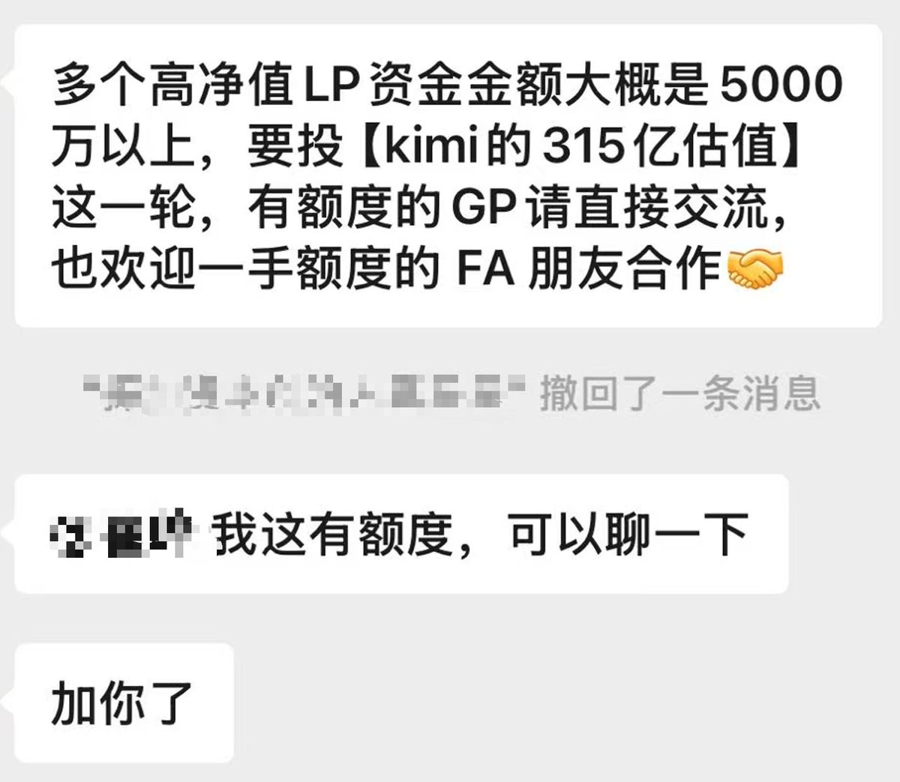

洛铃🦊Magic Caster
@LolingVerse
@MaxForAI 之前按特罗佩可和欧派爱preIPO的时候不就很多人说deepseek被低估了。
可惜没用，咱没资格买（（

Max For AI
@MaxForAI
‼️Breaking：资本正在疯抢DeepSeek和Kimi的新一轮份额🔥🔥
据《财经》报道，此前因为会议录音泄密事件而暂停的DeepSeek第二轮融资已经重启，计划募资500亿元，投前估值约5000亿元。
此前首轮表达投资意向的资金规模一度达到1000亿元。 https://t.co/ofYGhbM394